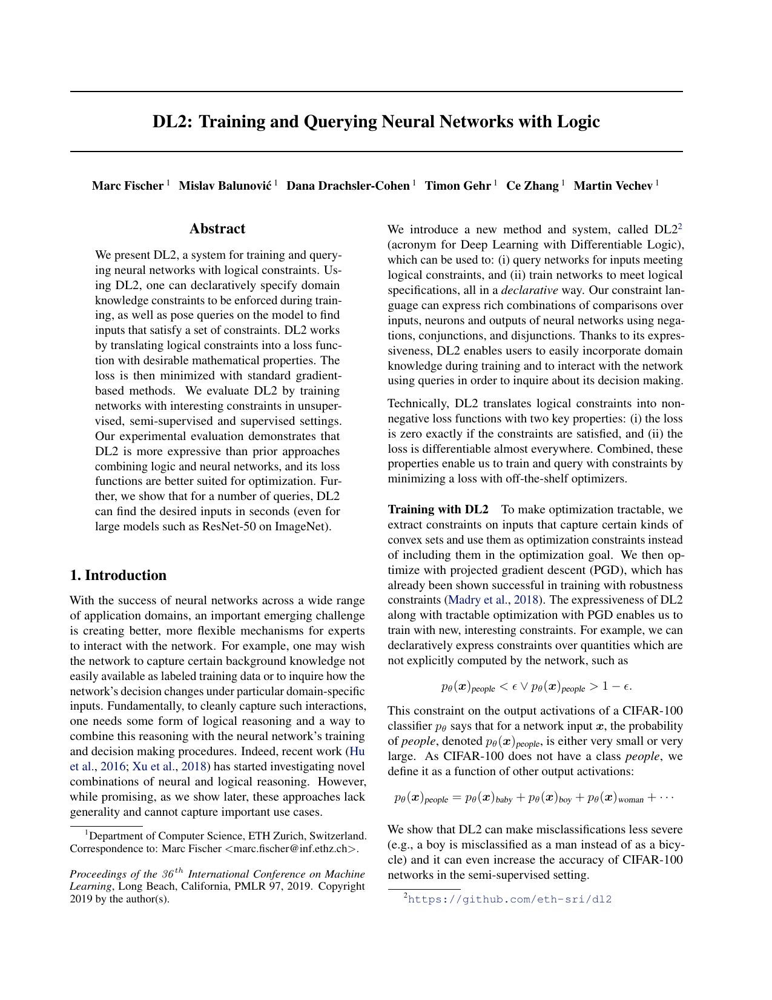
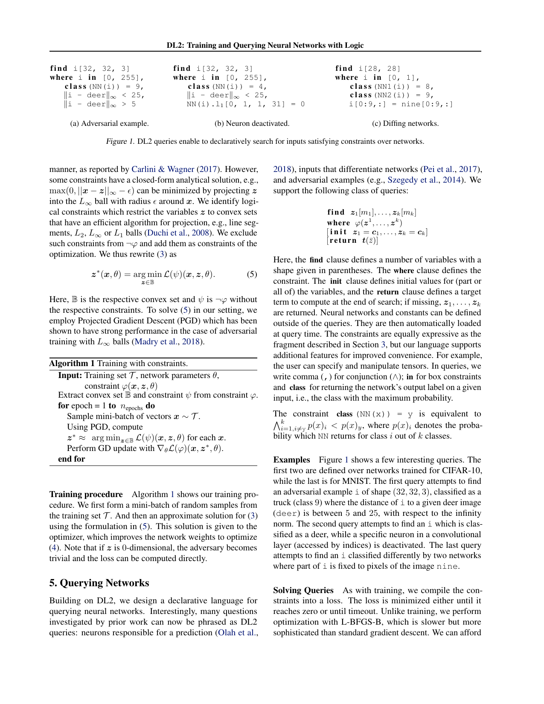

0. 名称消歧与论文来源确认
0.1 当前文档主要对应哪篇论文
当前这份文档主要对应的是：
- Fischer et al., ICML 2019, DL2: Training and Querying Neural Networks with Logic
本文默认讨论的 DL2，都指这篇论文提出的那套系统：
- 以声明式逻辑约束 $\phi$ 为对象；
- 把约束翻译成非负、几乎处处可微、且“满足当且仅当 loss 为 0”的数值目标；
- 用同一套“逻辑 $\to$ loss”机制同时支持 training 与 querying。
DL2 一般被理解为 Deep Learning with Differentiable Logic。
它的重点不是单独提出某个特定任务的技巧，而是把“逻辑约束如何进入神经网络”做成一个统一接口。
0.2 它在阅读路线里的位置
如果把 Hu et al. 2016 -> Semantic Loss -> DL2 看成一条逐步系统化的逻辑约束路线，那么这篇论文回答的问题是：
能不能不把逻辑只当作某一类特定输出损失，而是做成一套统一的约束语言，使同一份逻辑既能参与训练，也能直接拿来查询网络行为？
换句话说：
- Hu 2016 更像：
rule -> teacher distribution -> student - Semantic Loss 更像：
rule -> exact semantic loss -> parameter update - DL2 更像：
declarative constraint -> translated loss + optimizer -> training / querying
因此，这篇论文的真正推进不在于“再写一个 loss”，而在于：
- 约束对象从输出概率扩展到更一般的数值项；
- 逻辑不只进入训练，也进入查询；
- 训练不只针对训练集上的固定点，还可以对训练集外的输入区域施加全局约束。
0.5 最小问题设定与记号
为使全文自包含，先固定后文使用的最小设定。
设神经网络参数为 $$ \theta, $$ 输入变量记为 $$ x, $$ 若约束里还包含需要被搜索、扰动或量化的附加变量，则记为 $$ z. $$
DL2 的逻辑语言不直接从布尔变量出发，而是从数值项出发。
一个 term 记为
$$
t(x,z,\theta),
$$
它可以是：
- 常数；
- 输入坐标；
- 网络输出概率 $p_\theta(x)_i$；
- pre-softmax logit；
- 内部神经元激活；
- 若干数值项的代数组合。
本文默认要求 term 至少在绝大多数位置上对变量和参数可微。
由两个 term 可以组成比较约束：
$$
t=t',\qquad t\le t',\qquad t\ne t',\qquad t 更复杂的约束由这些原子约束通过
$$
\wedge,\qquad \vee,\qquad \neg
$$
组合得到，统一记作
$$
\phi(x,z,\theta).
$$ 由于 DL2 同时覆盖 定义
$$
\phi_{\text{eq}}(u)=\bigl(u=(1,1)\bigr),
\qquad
u=(u_0,u_1)\in\mathbb R^2.
$$ 这个例子只有一个作用： 在半监督 CIFAR-100 场景里，定义一组语义群组概率。 然后对每个群组施加约束：
$$
p_g(x)<\varepsilon\ \vee\ p_g(x)>1-\varepsilon.
$$ 其直觉是： 定义查询： 它的含义是： 这个例子最适合说明： 这篇论文真正想回答的问题是： 当专家已经知道网络应满足某种数值-逻辑性质时，能否用统一的声明式方式写出这些约束，并把它们同时用于训练和查询，而不必为每一种约束单独设计一套任务特定 loss？ 作者针对的是这类场景： 如果只看 Logic-Net 或 Semantic Loss，它们各自已经解决了一部分问题，但都还不够系统。 Logic-Net 的局限在于： Semantic Loss 的局限在于： 更一般地，很多 soft logic 编码虽然“可连续化”，但未必“可优化”。 一个逻辑翻译如果在违反约束时也可能给出零梯度，那么它在优化上就不是真正可用的。 这也是 DL2 与仅仅“把逻辑写成连续表达式”的方法之间最关键的分界线。 0.5.1 三个贯穿全文的 running examples
loss translation、training 和 querying 三个层面，本文固定三个最小例子，分别服务于不同部分。例 1：用于解释 loss 翻译几何的 equality toy
例 2：用于解释训练接口的 people-group 约束
例如
$$
p_{\text{people}}(x)
=
p_\theta(x)_{\text{baby}}
+p_\theta(x)_{\text{boy}}
+p_\theta(x)_{\text{girl}}
+p_\theta(x)_{\text{man}}
+p_\theta(x)_{\text{woman}}.
$$
例 3：用于解释 querying 的 generator disagreement query
FIND i[100]
WHERE i[:] in [-1, 1],
class(N1(G(i)), c1),
N1(G(i)).p[c1] > 0.3,
class(N2(G(i)), c2),
N2(G(i)).p[c2] > 0.3
RETURN G(i)
1. 论文想解决的核心问题
1.1 直觉问题
1.2 为什么前面的逻辑方法还不够
作者特别强调的问题是：
2. 论文中的两张关键图
2.1 图 1：DL2 的 querying 到底在搜什么
这张图最重要的不是页面排版，而是它把 DL2 的查询对象明确成了三类：
- 搜索满足对抗条件的输入；
- 搜索使某个内部神经元失活的输入；
- 搜索能区分两个网络行为的输入。
这说明 DL2 的逻辑对象不是“标签后处理规则”，而是：
- 对输入；
- 对输出；
- 对中间表示；
- 甚至对多个网络之间关系
都可以统一声明的数值约束。
换句话说，这张图真正想说的是：
- 逻辑不再只是训练时的旁路正则项；
- 它还可以直接成为“搜索网络行为”的语言。
2.2 Query benchmark 页面：为什么说它更像系统而不是单个技巧

这一页最值得看的通常不是具体数值，而是两件事：
- query template 的写法；
- query 运行时间的统计。
作者想强调的是：
- DL2 不只提出一种约束翻译方式；
- 它还把这套翻译做成了可执行的查询系统；
- 而且查询可以跨多个大模型运行，而不只是玩具示例。
这页和 Figure 1 合起来，基本就把 DL2 与前两篇论文的差别说清了：
- 前两篇主要解决“如何训练”；
- DL2 同时解决“如何训练”和“如何问模型问题”。
3. DL2 的逻辑语言到底在约束什么
3.1 约束基本单位不是布尔输出位，而是数值项
DL2 最根本的视角变化是：
- 它不先假定输出是某组布尔变量；
- 而是先允许你写任意数值 term，再对这些 term 做比较。
因此，DL2 的约束对象可以是：
- 输入坐标；
- 输出概率；
- pre-softmax logits；
- 内部层激活；
- 多个网络输出的组合量；
- 由这些量进一步构造出的和、差、范数或其他可微表达式。
例如下面这些约束都属于 DL2 的自然对象：
$$ p_\theta(x)_1 > p_\theta(x)_2, $$ $$ \mathrm{sum}(x)=\mathrm{sum}(G(x)), $$ $$ \mathrm{NN}(i).l_1[0,1,1,31]=0. $$
这意味着 DL2 的逻辑不是只约束“类别是否正确”，而是可以直接约束网络内部和外部的数值行为。
3.2 逻辑结构来自比较约束的布尔组合
DL2 的约束形式统一是：
- 原子比较约束；
- 通过 $\wedge,\vee,\neg$ 构成复合逻辑公式。
这使得它天然支持：
- implication 的等价改写；
- disjunction 表达“二选一”的语义；
- conjunction 表达多个条件同时满足；
- negation 表达反例或违反条件。
例如前面的 people-group 约束 $$ p_g(x)<\varepsilon\ \vee\ p_g(x)>1-\varepsilon $$ 就是一个典型的 disjunction：
- 要么该群组几乎不激活；
- 要么该群组几乎全部激活；
- 中间的“半亮不亮”状态被视为不满足约束。
3.3 它比前作更一般的地方到底在哪里
DL2 的更一般，不是停留在“可以写更多符号”。
更准确地说，它扩展了三个维度：
-
约束对象更一般
不限于输出类别概率，也可直接约束输入、logit、内部神经元和跨网络关系。 -
约束形状更一般
不限于线性输出规则，也可以表达非线性、带范数、带邻域、带插值的条件。 -
使用方式更一般
逻辑既可用于训练，也可用于查询。
这三点叠加起来，才构成了 DL2 的系统性。
4. 从逻辑约束到 loss：DL2 的核心翻译
4.1 翻译目标：非负、几乎处处可微、且 0 当且仅当满足
DL2 对每个约束 $\phi$ 关联一个非负 loss $$ L(\phi), $$ 并要求它满足两条核心性质：
- $L(\phi)=0$ 当且仅当 $\phi$ 被满足；
- $L(\phi)$ 对变量和参数几乎处处可微。
这两条性质合起来意味着：
- 逻辑满足性被准确地保留在零点结构上；
- 同时该结构又可以被标准梯度方法利用。
4.2 原子比较约束如何翻译
对于比较约束，DL2 给出的基本翻译是： $$ L(t\le t')=\max(t-t',0), $$ $$ L(t\ne t')=\xi\cdot [t=t'], $$ 其中 $\xi>0$ 是常数，$[t=t']$ 是指示函数。
其余比较约束通过逻辑等价改写得到：
$$
L(t=t') := L(t\le t' \wedge t'\le t),
$$
$$
L(t 这一步非常关键，因为 DL2 不是给每种符号随手配一个罚项，而是先保持逻辑等价，再做统一翻译。 对 conjunction 和 disjunction，DL2 定义：
$$
L(\phi'\wedge \phi'')=L(\phi')+L(\phi''),
$$
$$
L(\phi'\vee \phi'')=L(\phi')\cdot L(\phi'').
$$ 这两个定义的含义分别是： 对 negation，DL2 不直接发明一个新罚项，而是先用逻辑等价做改写，例如：
$$
L(\neg(t\le t'))=L(t' 这样做的作用是： 论文给出关键结论： Theorem 1: $L(\phi)=0$ 当且仅当 $\phi$ 被满足。 这条定理的意义不只是“loss 设计得漂亮”，而是： 如果没有这条性质，训练和查询都只能被理解为某种启发式近似，而不是对约束满足性的直接优化。 继续看前面的 equality toy：
$$
\phi_{\text{eq}}(u)=\bigl(u=(1,1)\bigr),\qquad u=(u_0,u_1).
$$ 在论文对比的 PSL 编码下，可能得到
$$
L_{\text{PSL}}(\phi)(u)=\max(u_0+u_1-1,0).
$$ 如果优化起点是
$$
u=(0.2,0.2),
$$
则
$$
u_0+u_1-1\le 0,
$$
于是梯度为 0，优化会停住；但此时 $u$ 并不满足目标赋值。 而在 DL2 翻译下，
$$
L(\phi_{\text{eq}})(u)=|u_0-1|+|u_1-1|.
$$ 在同一点
$$
u=(0.2,0.2)
$$
上，梯度仍非零，因此优化会继续把 $u$ 往满足点推进。 这个例子想说明的只有一句话： DL2 不是简单把逻辑写成连续表达式，而是显式考虑“违反约束时，梯度是否还能够推动优化继续前进”。 设训练分布为 $D$，搜索空间为 $A$，约束为
$$
\phi(x,z,\theta).
$$ DL2 希望找到参数 $\theta$，使得对随机样本 $x\sim D$，约束对所有 $z\in A$ 尽可能成立：
$$
\arg\max_\theta\Pr_{x\sim D}\bigl[\forall z\in A.\ \phi(x,z,\theta)\bigr].
$$ 这个目标可以等价改写成最小化“存在反例”的概率：
$$
\arg\min_\theta\Pr_{x\sim D}\bigl[\exists z\in A.\ \neg\phi(x,z,\theta)\bigr].
$$ 这一步非常关键，因为它把训练问题改写成： 如果对每个给定的 $x,\theta$，都能找到一个最坏反例
$$
z^*(x,\theta)=\arg\max_{z\in A}[\neg\phi(x,z,\theta)],
$$
那么外层就变成了：
$$
\arg\max_\theta \Pr_{x\sim D}\bigl[\phi(x,z^*(x,\theta),\theta)\bigr].
$$ DL2 把这个过程解释成一个二元博弈： 用 loss 近似后，内层问题写成
$$
z^*(x,\theta)=\arg\min_{z\in A} L(\neg\phi)(x,z,\theta),
$$
外层问题近似成
$$
\arg\min_\theta \mathbb E_{x\sim T}\bigl[L(\phi)(x,z^*(x,\theta),\theta)\bigr],
$$
其中 $T$ 是训练集。 因此，DL2 训练的本质不是单次静态正则，而是： 直接最小化
$$
L(\neg\phi)
$$
有时会很难。论文举的例子是局部鲁棒性约束：
$$
\phi((x,y),z,\theta)=\|x-z\|_\infty\le \varepsilon \Rightarrow \mathrm{logit}_\theta(z)_y>\delta.
$$ 按直接翻译，可得到
$$
L(\neg\phi)
=
\max(0,\|x-z\|_\infty-\varepsilon)
+
\max(0,\mathrm{logit}_\theta(z)_y-\delta).
$$ 这里的问题是： 因此 DL2 的关键工程处理是： 这一步不是改逻辑语义，而是改优化接口： 当内层搜索空间变成凸集 $B$ 之后，DL2 使用的是 projected gradient descent (PGD)。 它的作用是： 所以 PGD 在 DL2 里不是一个附属技巧，而是训练能否 tractable 的核心组成部分。 若把论文里的训练算法压成最短主线，就是： 这是 DL2 相对前两篇论文最值得单独拎出来的一点。 在很多 prior work 里，约束主要只在训练样本本身上起作用。 去找违反约束的反例。 也就是说，DL2 的“全局性”主要来自： 例如 Lipschitz 约束：
$$
\forall z\in B_\varepsilon(x),\ z'\in B_\varepsilon(x').\
\|f(z)-f(z')\|_2 < L\|z-z'\|_2.
$$ 这里被约束的就不是训练集上的固定两点，而是两个邻域中的所有点对。 DL2 设计了一套接近 SQL 的声明式查询语言，基本形状是： 这里： DSL 还提供一些语法糖： 因此，论文中的
$$
\mathrm{class}(NN(x))=y
$$
本质上可理解为： DL2 的 querying 不是另一套独立系统。 差别只在于： 所以，training 和 querying 的统一性并不是口号，而是： 继续看前面的 generator disagreement query： 它的逻辑结构可以拆成三层： 域约束 跨网络行为约束 返回对象 这说明 query 的真正作用不是“查一个标签”，而是： 在 querying 中，DL2 仍然把约束编译成 loss，但优化器换成了 原因很直接： 因此 querying 的标准流程是： 这点和 Semantic Loss 必须明确区分。 Semantic Loss 优化的是： 而 DL2 优化的不是这种“分布级 satisfying mass”。 换句话说： 这点和 Logic-Net 也不同。 DL2 里没有： 它的链条更像： $$
\phi
\Longrightarrow
L(\phi)
\Longrightarrow
\text{adversary / optimizer}
\Longrightarrow
\theta \ \text{或}\ z.
$$ 因此，DL2 真正系统化的地方在于： 如果只看一次 loss 计算，DL2 确实是在某个具体赋值点上评估 violation。 但如果把量化变量和 adversary 搜索考虑进去，它又可以变得全局： 所以更准确的说法是： 这是一种与 Semantic Loss 完全不同的“全局性”来源。 一句话压缩： 尤其是对 PSL，DL2 的关键不是“更硬”，而是： 可以把三篇逻辑主线论文压成： $$
\text{Logic-Net}: \phi \to q^\star \to \theta,
$$
$$
\text{Semantic Loss}: \phi \to P_p(\phi) \to \theta,
$$
$$
\text{DL2}: \phi \to L(\phi) \to (\theta\ \text{or}\ z).
$$ 其中最后一条最重要，因为它同时支持： 在半监督 CIFAR-100 实验里，DL2 使用的是 people / trees 等语义群组约束。 因此，无标签数据虽然不提供精确类别，但仍提供： 论文报告的结果是： 论文里的无监督实验是图上最短距离回归任务。 这说明： 这个结果很重要，因为它把 DL2 从“加规则的分类技巧”推进到了更一般的结构学习框架。 在监督实验里，作者考虑了： 结果上，DL2 的核心收益不是“所有任务都提高 prediction accuracy”，而是： 这说明 DL2 的价值主要在于： 在 querying 实验中，DL2 在多个数据集、多个网络和多个 query template 上测试。 虽然 DL2 给出了统一的逻辑 $\to$ loss 翻译，但实际难点仍然存在于优化： 也就是说，DL2 解决的是“怎样统一表达并可微优化”，而不是“所有约束都会变得便宜”。 论文实验中明确指出： 更直白地说： 对 querying 来说，若某个查询超时或未找到解，这并不自动说明： 更可能的原因是： 因此，DL2 的 querying 更应被理解为： 相较于 Logic-Net 和 Semantic Loss，DL2 更强，但代价也更明显： 因此，DL2 更像一个框架或系统，而不只是“一条更漂亮的公式”。 当前仓库里已经有 DL2 的本地资源： 仓库里的代码组织与论文结构是对应的： 从学习顺序看，最稳妥的入口是： 这样做的好处是： 最适合先做的是一个 原因是： 最自然的待实现目录仍然是： 一个稳妥的最小结构可以是： 其中最重要的不是先把所有功能堆满，而是先把这三件事讲清楚： 如果只保留最关键的几句话，那么这篇论文的骨架就是： 所以它真正解决的是： 如何把“逻辑约束与神经网络的交互”从单个任务特定技巧，提升为一套统一的、可训练、可查询的声明式系统。 而它真正付出的代价是： 表达力越强，训练中的内层搜索、凸集投影、查询优化与工程复杂度就越重。4.3 布尔组合如何翻译
4.4 为什么定理 1 很重要
4.5 它为什么比某些 soft logic 编码更适合梯度下降
5. DL2 怎样进入训练
5.1 训练目标先被改写成“找反例”
5.2 内外层优化：optimizer vs adversary
5.3 为什么要把凸输入约束从 loss 里抽出来
5.4 为什么 PGD 会在这里出现
5.5 它为什么能做“训练集外”的全局训练
而 DL2 允许：
这类约束本质上已经超出了“在数据点上加一个额外 loss”的范畴。
6. DL2 怎样进行 querying
6.1 Query DSL 的基本形式
FIND z1[m1], ..., zk[mk]
WHERE φ(z1, ..., zk)
[INIT z1 = c1, ..., zk = ck]
[RETURN t(z)]
FIND 定义要搜索的变量及其形状；WHERE 写逻辑约束；INIT 提供初值；RETURN 指定最终返回的对象，若省略则默认返回搜索变量本身。
, 表示 conjunction；in 表示 box constraint；class 表示网络在某输入上的 argmax 类别。
6.2 为什么 querying 和 training 用的是同一套核心
它和 training 复用的是同一个核心：
6.3 一个最典型的查询例子怎么读
FIND i[100]
WHERE i[:] in [-1, 1],
class(N1(G(i)), c1),
N1(G(i)).p[c1] > 0.3,
class(N2(G(i)), c2),
N2(G(i)).p[c2] > 0.3
RETURN G(i)
$i$ 是一个 100 维噪声向量，且每一维都在 $[-1,1]$ 内。
生成器输出 $G(i)$ 必须同时被两个分类器以较高置信度判成不同类别。
返回的不是噪声本身，而是生成后的样本 $G(i)$。
6.4 Querying 为什么用 L-BFGS-B
L-BFGS-B。
L-BFGS-B 对这类连续约束搜索更合适。
7. 它到底在优化什么
7.1 它不是在优化“满足世界总概率质量”
DL2 优化的是：
7.2 它也不是 teacher distribution
7.3 它为什么既是局部的，又可能是全局的
从这个意义上说，它是点态的，而不是像 Semantic Loss 那样对整个世界集合求和。
8. 它和 Logic-Net、Semantic Loss、PSL 的本质差别
8.1 和 Logic-Net、Semantic Loss 的区别
维度
Logic-Net
Semantic Loss
DL2
规则入口
teacher posterior
直接进入输出 loss
统一声明式约束语言
中间对象
教师分布 $q^\star$
满足世界总概率质量
约束翻译出的 violation loss
主要作用对象
输出分布
离散输出分布上的世界集合
输入、输出、神经元及其数值关系
是否支持 querying
否
否
是
是否自然支持训练集外约束
弱
弱
强
是否适合回归 / 物理约束
一般
较弱
较自然
Logic-Net：先改分布，再改参数；Semantic Loss：直接优化满足世界的总概率质量；DL2：把一般逻辑约束编译成统一 loss，再用它做 training 或 querying。8.2 和 PSL / XSAT / Bach et al. 的区别
方法
核心对象
主要问题
DL2 相对优势
PSL
soft truth over $[0,1]$
可能在未满足时出现零梯度
loss 零点与约束满足严格对齐，优化几何更稳
XSAT
数值化 satisfiability
原子损失离散、不可微
适合梯度法
Bach et al.
线性约束的 soft 形式
主要处理线性 conjunction
DL2 支持更一般的布尔组合和非线性数值项
8.3 一个三篇逻辑约束论文的压缩关系
9. 这篇论文为什么有效
9.1 半监督学习：它让无标签数据承载更高层语义群组约束
其本质不是告诉网络“具体属于哪一类”，而是告诉网络：
9.2 无监督学习：只靠结构性质也能逼近监督解
网络需要预测从源点到所有点的最短距离，但训练时不直接给标签，而只给最短距离函数必须满足的结构性质。
9.3 监督学习：它能显著提高 constraint accuracy
9.4 Querying：它把“网络行为分析”也做成了统一接口
作者强调的结果不是“每个 query 都成功”，而是：
10. 计算代价与局限性
10.1 约束翻译优雅，不代表优化总是容易
10.2 全局约束的代价明显高于训练集约束
T 类训练集约束更像“在已有样本关系上加结构”；G 类全局约束更像“边训练边做区域级反例搜索”。10.3 查询失败不等于无解
10.4 表达力提高，也意味着使用门槛提高
11. 与本地仓库和代码的对应关系
training/supervised/semisupervised/unsupervised/querying/
README.md，明确系统边界；querying/README.md，最快建立对 DSL 的直觉；training/README.md，再回到论文里的 nested optimization。
12. 最小复现建议
12.1 最适合先做什么
query-only 的最小 toy。
12.2 一条最稳的最小复现路径
12.3 最值得做的三个对照
query DSL vs query API
看同一约束在高层接口和低层接口中的表达差别。仅训练集约束 vs 带全局量化变量的约束
看 DL2 的“全局性”到底来自哪里。semantic loss 风格约束 vs DL2 风格约束
看“输出层满足概率质量”与“声明式数值约束系统”在表达力和工程难度上的差别。12.4 如果要对齐当前仓库的 toy 路线
repro/04_dl2_toy/
README.md
notes.md
config.py
toy_problem.py
dl2_bridge.py
run_query.py
run_train.py
experiment.py
results/
13. 一页压缩总结